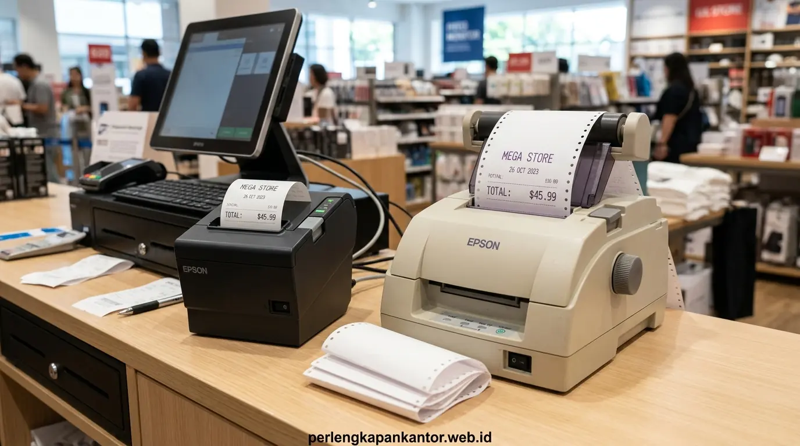

Dalam operasional meja kasir (Point of Sale/POS) maupun sistem kasir administrasi perkantoran, kecepatan transaksi dan efisiensi pengeluaran kertas struk merupakan dua faktor utama penentu kelancaran layanan. Pertanyaan yang sering dihadapi oleh manajer purchasing dan pemilik toko adalah memilih antara printer kasir berteknologi printer thermal vs dot matrix. Masing-masing perangkat membawa karakteristik mekanis, biaya perawatan, dan jenis kertas yang sangat berbeda untuk kebutuhan jangka panjang.
Bagaimana Perbedaan Prinsip Kerja Antara Printer Thermal dan Printer Dot Matrix?
Perbedaan paling fundamental antara kedua jenis printer kasir ini terletak pada metode transfer karakter ke atas permukaan kertas fisik. Berdasarkan Retail Technology & POS Benchmark 2025, sekitar 79% jaringan gerai modern dan kafe di Indonesia telah beralih sepenuhnya ke printer thermal berkat kecepatan cetak di atas 200 mm/detik yang memperpendek waktu antrean kasir hingga 42%. Sementara itu, riset dalam Indonesia Office Supplies & Hardware Report 2025 menunjukkan bahwa sektor pergudangan dan distribusi B2B masih mempertahankan penggunaan printer dot matrix sebesar 63% khusus untuk pencetakan faktur rangkap karbon.
Printer thermal bekerja tanpa melibatkan benturan mekanis. Print head thermal memiliki elemen pemanas mikroskopis yang mengaktifkan zat kimia peka panas pada kertas thermal roll berkualitas untuk membentuk teks dan barcode beresolusi tajam. Sebaliknya, printer dot matrix menggunakan susunan 9 hingga 24 pin jarum baja kecil yang memukul pita ribbon bertinta ke permukaan kertas, menciptakan karakter huruf dengan gaya tumbukan fisik.
Mengapa Printer Kasir Thermal Lebih Hemat Biaya Operasional Dibandingkan Dot Matrix?
Bila ditinjau dari total biaya kepemilikan (Total Cost of Ownership/TCO), printer thermal menawarkan penghematan biaya bulanan yang signifikan karena mengeliminasi pos belanja pita ribbon. Berikut faktor efisiensinya:
- Bebas Biaya Tinta & Ribbon: Anda hanya perlu membeli roll kertas thermal. Tidak ada lagi pengeluaran rutin untuk cartridge pita ribbon hitam atau ungu yang cepat pudar.
- Fitur Auto-Cutter Otomatis: Pisau pemotong otomatis pada printer thermal memangkas kertas persis di batas akhir struk tanpa ada sisa margin kosong berlebih, menghemat hingga 18% konsumsi kertas harian.
- Minim Komponen Bergerak (Reliabilitas Tinggi): Tanpa adanya motor penggerak pita dan jarum pin yang rentan patah akibat paper jam, printer thermal memiliki frekuensi perbaikan servis mesin yang jauh lebih rendah.
- Konsumsi Daya Listrik Rendah: Thermal printer hanya menyedot daya aktif saat pemanas menyala sepersekian detik, jauh lebih hemat listrik untuk workstation kasir yang menyala seharian.

Pemasangan roll kertas thermal kasir berstandar BPA-free untuk memastikan hasil cetak struk tajam, cepat, dan aman digunakan staf harian.
Tabel Komparasi Spesifikasi Printer Kasir Thermal vs Dot Matrix
Perhatikan matriks perbandingan teknis di bawah ini untuk menilai kecocokan masing-masing jenis printer kasir bagi kebutuhan operasional Anda:
| Parameter Penilaian | Printer Kasir Thermal | Printer Kasir Dot Matrix |
|---|---|---|
| Kecepatan Cetak | Sangat Cepat (150 – 250 mm/detik) | Lambat (4.5 – 6 baris/detik) |
| Kebutuhan Tinta/Ribbon | Tanpa Tinta / Ribbon (Nol Biaya Tinta) | Wajib Cartridge Pita Ribbon Berkala |
| Jenis Kertas yang Digunakan | Kertas Thermal Roll (57mm / 80mm) | Kertas HVS Roll / Kertas NCR Rangkap |
| Tingkat Kebisingan Suara | Hampir Hening (< 40 dB) | Bising Khas Mekanis Pin (> 65 dB) |
| Kemampuan Cetak Rangkap | Hanya 1 Lembar (Single Ply) | Mendukung 2-Ply hingga 4-Ply Rangkap |
| Ketahanan Arsip Tulisan | 1 – 3 Tahun (Peka Panas & Alkohol) | > 10 Tahun (Tahan Panas & Awet) |
| Konektivitas Modern | USB, Bluetooth, Wi-Fi, LAN (Ethernet) | Paralel, Serial, USB Standar |
Apa Saja Kelebihan dan Kekurangan Masing-Masing Jenis Printer Kasir?
Setiap jenis teknologi printer memiliki keunggulan dan batasan yang perlu disesuaikan dengan lingkungan kerja Anda:
- Kelebihan Printer Thermal: Hasil cetak logo grafik, QRIS, dan barcode sangat presisi; proses isi ulang roll kertas sangat cepat (metode drop-in loading); serta bentuk unit yang kompak dan menghemat ruang meja kasir.
- Kekurangan Printer Thermal: Tidak dapat mencetak dokumen rangkap dalam satu kali jalan; dan struk kertas thermal rentan memudar jika terpapar panas terik matahari atau terkena cairan kimia pembersih.
- Kelebihan Printer Dot Matrix: Mampu menghasilkan salinan tanda terima rangkap secara simultan untuk arsip akuntansi dan pelanggan; serta hasil cetakan tinta karbon sangat tahan lama untuk dokumen audit perpajakan.
- Kekurangan Printer Dot Matrix: Kecepatan cetak lambat yang kerap menimbulkan antrean kasir; suara bising saat mencetak; dan biaya ekstra untuk penggantian berkala pita tinta ribbon.
Bagaimana Cara Menentukan Printer Kasir yang Sesuai dengan Model Bisnis Anda?
Jika bisnis Anda bergerak di bidang restoran, kafe, minimarket, apotek, ritel butik, atau loket pembayaran tiket, printer kasir thermal adalah opsi paling unggul untuk memberikan pelayanan cepat dan hemat pengeluaran. Namun, jika Anda mengelola pergudangan grosir, bengkel servis kendaraan, atau distributor material di mana tanda terima rangkap tanda tangan driver diperlukan, printer dot matrix tetap merupakan pilihan wajib.
Untuk memaksimalkan efisiensi biaya kantor, Anda dapat menggabungkan kebutuhan perlengkapan kasir dengan penyediaan paket ATK bulanan korporat agar seluruh consumable kantor tercukupi dengan harga diskon volume grosir.
Solusi Pasokan Kertas Thermal & Paket ATK Grosir dari Perlengkapan Kantor
Memastikan ketersediaan perlengkapan administrasi dan kertas kasir tanpa kendala operasional kini semakin mudah bersama Perlengkapan Kantor. Kami menyediakan:
- Kertas Thermal Roll Grosir Resmi: Pilihan ukuran 80x80mm dan 57x50mm berbahan baku impor berkualitas tinggi, tidak berdebu (lint-free), dan ramah print head.
- Paket ATK & Consumables Bulanan B2B: Kertas HVS, map arsip, tinta, toner, dan kebutuhan kasir dalam satu faktur terpadu dengan sistem pembayaran tempo (Term of Payment).
- Layanan Cepat Bebas Ongkir: Pengiriman terjadwal langsung ke kantor atau jaringan cabang gerai Anda di area Jakarta dan sekitarnya.
Pertanyaan Populer Seputar Printer Kasir Thermal & Dot Matrix (FAQ)
Kesimpulan Praktis
Printer kasir thermal merupakan solusi paling hemat biaya dan efisien untuk kebutuhan cetak struk transaksi cepat tanpa biaya tinta tambahan. Lengkapi pasokan kertas thermal dan paket ATK bulanan kantor Anda dengan harga grosir terbaik dari kami.

Penulis: Tim Spesialis Perlengkapan Kantor
Divisi riset perangkat operasional bisnis dan pengadaan ATK grosir di Perlengkapan Kantor, berdedikasi mengoptimalkan efisiensi operasional kasir dan kearsipan korporat.